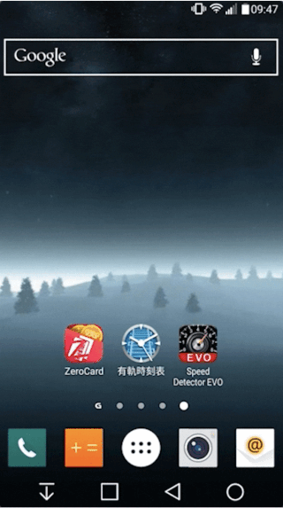
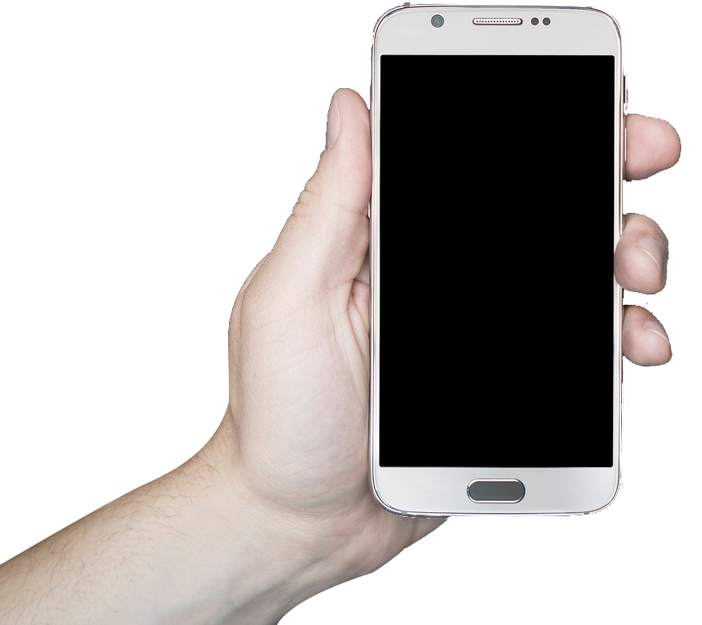

手機精準定位推播，主動與選民溝通。
LBS 即時鎖定縣市與行政區，業界領先的動態地理圍欄技術。
宣傳車、戶外看板、街頭拜票、傳單、報紙、電視廣告 — 還能觸及年輕選民嗎?
現今世代,智慧型手機已成為日常中不可或缺的一部分 — 透過手機獲取資訊,是國人的主要方式之一
資料來源:內政部
手機場域推播的四大核心優勢 — 不需 APP 開啟,有開機就行銷
不是「順便看到」廣告 — 主動推播訊息直接出現在通知欄,選民必看。
指定市場用戶,即時圈地推播 — 你選擇要觸及的選區,系統自動鎖定範圍內所有手機。
鎖定眼球,保證無干擾 — Diamond Push 鑽石推播置頂顯示,搶佔選民第一眼。
主動溝通,有開機就行銷 — 不需依賴選民主動搜尋或打開 APP,直接觸達。
主動推播直接顯示於手機桌面,選民第一眼就看見

多種版位選擇,涵蓋 Android 與 iOS 全平台
展示型廣告(Android)
• 尺寸:686×384 px
• 內文:18 字內
• 容量:500k 內
• 三個連結按鈕(設定 / 觀看 / 分享)
• 增加廣告邊際效益,可分享至 Line / FB
Android / iOS
• 圖片:144×144 px
• 標題:15 字內
• 內文:18 字內
• 格式:jpg / png · 15k 內
橫幅廣告
• 尺寸:640×100 px
• 格式:jpg / png
• 容量:100k 內
• 適合活動公告、即時訊息
純文字訊息
• 文字:35 字內(含空格與標點符號)
• 最輕量、最即時
• 適合通知型訊息
業界唯一不需加裝硬體的場域主動推播技術 — 配合動態地理圍欄,即時調整推播範圍
鎖定各縣市,向該區域內所有已開機手機主動推播。市場獨特競爭優勢 — 不需 APP 開啟,有開機就接觸。
鎖定縣市內的特定行政區進行投遞,更靠近選民。深度滲透里、鄰、社區生活場域。
篩選具投票資格的選民,在特定時間內接近場域即可收到推播 — 引導參與活動、加深參與感、邀請非到場者。
| 項目 | 手機簡訊 | Line@ | iFLocus 選舉專案 |
|---|---|---|---|
| 定向力 | 靜態 LBS | 無 LBS 功能 | 獨家專利定位,不受室內外與天氣影響 |
| 即時性 | 不即時 | 選民需先加好友 | 即時主動推播,精準投放至選民手機 |
| 計費方式 | 3.5–4 元 / 則 | 月費 NT$10,000 起 | 2.5 元 / 則 |
| 適用情境 | 已有名單 | 長期經營粉絲 | 精準鎖定選區、活動現場 |
從前期建立印象 → 中期維持熱度 → 後期加大聲量 → 未來持續經營,iFLocus 全程陪跑
知名度曝光為主,鎖定選區透過議題操作,提升候選人於選民心中的形象值。
追蹤廣告成效,大數據 + 統計分析的智慧選戰系統,根據戰情即時調整曝光頻率。
投票前搭配造勢活動及街頭拜票,定點投遞吸引人潮、提高活動聲量、強化選民印象。
選戰需長期耕耘 — 適地性的選區服務,強化與選民的長期連結。
手機推播 + 社群行銷 + 影音內容 + 知名度曝光,效益加倍
即時讓選民了解候選人最新活動,增加認同感。透過定期更新貼文連結維持新鮮度。
與加入群組的用戶進行互動,團隊可彈性運用,適合長期經營鐵粉。
播放競選影片、過去活動影片,讓無法及時參與的選民可以回看,增加參與感。
對候選人提供完整訊息介紹,適合深度資訊與選區服務。
了解選民真實需求與政策偏好,精準調整議題操作方向。
提供完整追蹤報表,讓每一筆預算與成效都可量化、可調整。
無額外設備成本,接收範圍更大 — 配合動態地理圍欄,自由操作推播區域、內容與時間

成為候選人強力數位發聲管道 — 跨品類 APP 聯播網,每月活躍裝置 1,500 萬+